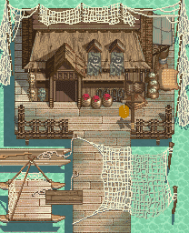
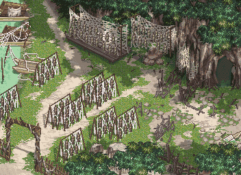

「渔村」 ※剧情流程攻略※  “歆儿”！清晨，战廷云从噩梦中醒来。梦中的那个叫做“歆儿”的女孩子有似曾相识的感觉。这时廷云的师妹苏芷嫣正好进来叫他起床，两人为了刚刚廷云做的梦到底是春梦还是噩梦斗了几句嘴，然后一起去向他们的师傅胤辰问安。 两人在师傅面前又斗起嘴来，师傅派他们两个去药草铺取药。出了门之后，从渔村村民的口中得知，渔村南边的晒鱼干场最近有怪物出没。来到药草店，向老板要了师傅叫他们来取的药草包之后，药草店老板询问芷嫣最近的病情如何，并说由于最近怪物出没，治疗芷嫣病情的火焰草比较难采到。 将药草包送给师傅后，师傅告诉两人，他需要外出数日，叫两人看家并好好练功，两人又因为谁能好好练功斗起嘴来。最后，师傅叮嘱廷云要照顾好芷嫣。 几天后，突然村长来找胤辰师傅，廷云和芷嫣问村长有什么事需要找师傅，村长很为难的告诉两人，几日前有人看到有怪物在渔村南边晒鱼干场旁的礁岩洞出没，他的女儿小敏今天突然不见了，可能误入了礁岩洞，所以想找胤辰师傅帮忙。廷云和芷嫣商量后决定由两人前往营救小敏。 两人来到礁岩洞口，村长在洞口焦急的来回走动，两人告诉村长他们决定去营救小敏，村长感激的不知如何是好，就把随身携带的2个止血草和化毒草给了两人，在一旁的村民也告诉两人，如果受伤了可以出来找他治疗。  两人进了洞后一阵摸索，在半路碰到先进入洞里营救小敏的村们老张，老张会教会两人使用雕像恢复体力，两人利用雕像好好教训了几个小怪。 走到洞的最深处，两人看到小敏趴在地上，一只巨大的巨蚨蚓精正准备将小敏吃掉，两人冲到小敏面前，与巨蚨蚓精打了起来。不久，巨蚨蚓精被两人打倒了，两人叫醒小敏，叫她赶紧先出洞去，就在小敏刚刚离开，突然芷嫣的病又发作了，廷云很紧张的去扶芷嫣，谁知巨蚨蚓精原来是装死，它趁廷云不备，突然冲过来，将廷云打到在地，就在它准备再进一步攻击廷云的时候，胤辰师傅赶到了，一招就解决了巨蚨蚓精。然后，胤辰和廷云一起将芷嫣带回了家。 第二天，芷嫣醒来，胤辰师傅告诉芷嫣关于她是火凌族人及她病因的事情，并且说她的病需要到火凌村去才能够治好。芷嫣这时面露难色。之后，胤辰安排廷云和芷嫣一同前往火凌村，并且让他们带信给路过的平牧城城主。两人别过师傅，踏上去往火凌村的道路。 芷嫣的身上似乎藏着不可告人的秘密，不想回到火凌部族的原因是……？下回两人将踏上未知的旅程。（第一章第二回结束） ※隐藏物品及隐藏剧情※ 1.房间内师父身后的柜子里有“100两” ※迷宫地图※ |